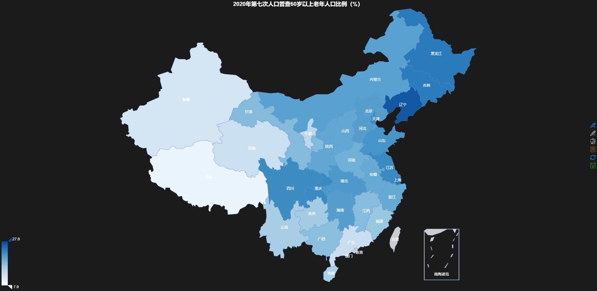

Data analysis of the 7th national census in 2020 of China
List
-
education years of 15+ population
-
higher education
-
The number of male to female radio (femal:100)
-
age of 14- population
-
age of 60+ population
-
age of 65+ population
-
population number
data
all the origin data download from the China National Burean of Statistics
Visualization
R packages REmap
Copyright
Feel free to share and use, but it must be noted that it comes from my githubs.
Release Date: 12th May 2020

If the detailed data of the 7th National Census is released, there may be a more detailed interpretation.